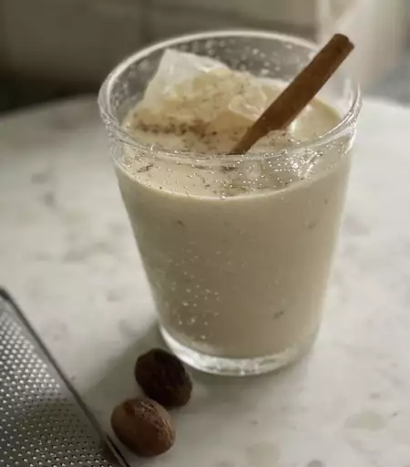

Amazingly Good Eggnog

Ingredients:
1 teaspoon ground cinnamon
2 ½ teaspoons vanilla extract, divided
2 ½ cups light rum (Optional)
Steps:
Step 1.
Heat the milk, cinnamon, cloves, and a dash of vanilla. Boil, then remove from heat.
Step 2.
Whisk the egg yolks, then whisk in the sugar.
Step 3.
Gradually whisk the hot milk mixture into the egg mixture.
Step 4.
Cook the mixture over medium heat until thick, then strain to remove the cloves.
Step 5.
Stir in the cream, rum, remaining vanilla, and nutmeg. Refrigerate overnight.